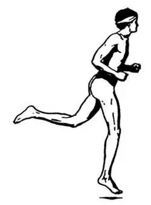
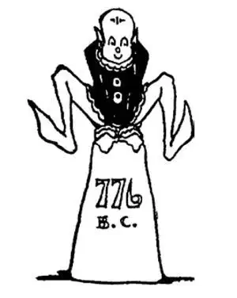

15
The Crown of Leaves
桂冠

GREEK boys and young men and even girls loved all sorts of outdoor sports.
They didn't play football or baseball or basketball, but they ran and jumped and wrestled and boxed and threw the discus—a thing like a big, heavy dinner plate of iron.
From time to time matches were held in different parts of Greece to see who was the best in these sports.
The Big Meet, however, took place only once every four years at a place called Olympia in southern Greece, for all the winners from different parts of the country were here matched against each other to see who should be the champion of all Greece.
The time when the games were held was a great national holiday, for the games were in honor of the head god, Zeus, as the Greeks called him. People came from far and wide to see the games, much as they do now when a World's Fair is held or a modern Olympics.
Only Greeks could enter this contest, and only those who had never committed a crime or broken any laws—as a boy or girl nowadays must have a clean record in order to be allowed to play on a college or school team. In ancient Greece, only men and boys competed in the Olympics.
If there happened to be a war going on at the time, and there usually was, so important was this holiday that a truce was declared, and everybody went off to the games. Nothing could be allowed to interfere with the games, and even war was not as important. “Business before pleasure!” When the games were finished, they started fighting again!
The Greek boys and young men would train for four years getting ready for this big event, and then nine months before the great day they would go to Olympia to train at an openair gymnasium near the field.
The games lasted five days and began and ended with a parade and prayers and sacrifices to the Greek gods, beautiful statues to whom were placed all about the field, for this was not only sport, but a religious service in honor of Zeus and the other gods.
There were all sorts of matches—in running, jumping, wrestling, boxing, chariot-racing, and throwing the discus.
Anyone who cheated would have been put out and never again allowed to take part. The Greeks believed in what we call being a good sport. A Greek didn't brag if he won. He didn't make excuses if he lost; he didn't cry out that the decision was unfair.
The athlete who won one or more of these games was the hero of all Greece, and in particular of the town from which he came. The winner received no money prize but was crowned with a wreath made of laurel leaves. This he valued much more than an athlete nowadays does the silver cup or gold medal he may win. Besides receiving the laurel wreath, the winner had songs written to him by poets, and often statues were made of him by sculptors.
There were not only athletic matches but contests between poets and musicians to see who could write the best poetry or compose and play the sweetest music on a kind of small harp called the lyre. The winners of these contests did not receive a laurel wreath, but they were carried in triumph on the shoulders of the throng, as you may have seen the captain of a winning team picked up and raised aloft by his fellow-players after he has won.
Now, in Greek history the first event that we can be absolutely sure is true is the record of the winner of a footrace in these Olympic Games 776 years before Christ was born. From this event the Greeks began to count their history dates, as we do now from the birth of Christ. It was their Year 1.

Greek runner （希腊跑步者）
The four years' time between the Olympic Games was called an Olympiad. Up to this time, they had no calendar that gave the year or date, so 776 is the date of the first Olympiad. Greek history before that time may have been partly true, but we know much of it was mythical. Beginning with 776, however, Greek history is pretty much all true.
After a long while they stopped having the games, but in 1896 it was thought it would be a good thing to start them again. For the first time in over two thousand years, new Olympic Games were again held in 1896 A.D., not in Olympia, however, but in Athens. The games used to be held only in Greece. Now they are held each time in a different country. Only Greeks used to be allowed to take part. Now, however, athletes from almost all the countries of the world are invited to compete. Only men used to take part. Now women from all over the world compete also. War used to be stopped when the time for the games arrived. Now the games are stopped when war is on.
From what we have learned of the Spartans' training, we might guess that they used to win most of the athletic prizes, and they did.
Do the Spartans still continue to win most of the prizes in the New Olympic Games?
No. Not even the Greeks now carry off the chief prizes, because Greece is just one small nation among many.
【中文阅读】
希腊的男孩子、小伙子甚至女孩子都喜爱各种户外运动。
他们不踢足球，也不打棒球或篮球，但他们跑步、跳高、摔跤、拳击、掷铁饼——铁饼就像一个又大又重的铁盘子。
希腊各地有时候会举行比赛，看谁在这些运动项目上最棒。
但是，最大的体育盛会在希腊南部一个叫奥林匹亚的地方举行，每四年一次，来自全国各地的优胜者云集于此，同台竞技，从中决出全希腊的冠军。
比赛举办的那段时间是希腊最盛大的节日，因为这些比赛是以希腊神话中的众神之王的名义举办的——希腊人称他宙斯。人们从四面八方赶来观看比赛，就像现在人们前去观看世界博览会或奥运会一样。
只有希腊人才能参加竞赛，而且参赛者不能有任何犯罪或违法记录——就像如今的男孩或女孩必须无任何不良记录才能参加大学或中学的校队一样。古希腊时，只有男人和男孩子才能参加奥林匹克运动会。
如果这时碰巧有战争发生——那时候打仗是常有的事，因为这个节日如此重要，所以双方就会宣布休战，每个人都会离开战场去观看比赛。此时不允许任何事情干扰比赛，即使战争也没有比赛重要了。“先办正事再享乐！”比赛结束后，他们又继续开仗。
为了参加这场重大比赛，希腊的男孩和小伙子会要进行长达四年的训练才能做好准备，运动会正式开始前的九个月，他们要到奥林匹亚比赛场地附近的露天体育场再进行训练。
运动会持续五天，开幕和闭幕时都要举行游行、祈祷仪式并向希腊众神献祭，会场到处摆放着众神精美的雕像，因为这不仅是一场运动会，还是纪念宙斯和其他众神的宗教仪式。
有各种各样的比赛——赛跑、跳跃、摔跤、拳击、战车赛和掷铁饼。
任何人在比赛中作弊都会被淘汰出局，而且从此永远失去参赛资格。希腊人信奉我们现在所说的公平竞赛的体育精神。赢了，希腊人不自夸；输了，也不找借口，更不会大声嚷嚷说判决不公。
在一项或多项比赛中夺冠的运动员是全希腊的英雄，尤其是他代表的那个城市 的英雄。获胜者没有奖金可拿，但是人们会把月桂树叶编成的花环戴在他头上。相比较今天的运动员获得的银杯或金牌，他认为这个桂冠更贵重。除了荣获桂冠外，还会有诗人给他写诗，也常有雕塑家给他雕刻塑像。
那时不仅有体育竞赛，还有诗人和音乐家的比赛，看谁能写出最优美的诗歌，谁能创作并演奏出最甜美的音乐。他们演奏的乐器是一种叫做“里拉琴”的小竖琴。这些比赛的获胜者得到的不是桂冠，但是他们会在胜利的欢呼声中被人群扛在肩上，就像今天你在比赛现场可能见到的那样。
现在，希腊历史上我们能确定无疑的第一个事件是公元前776年奥林匹克运动会上赛跑比赛获胜者的记录。从这次比赛时间起，希腊人开始用数字表示他们的历史日期，就像我们从耶稣诞生时起开始公元纪年一样。那一年是希腊纪年的第一年。
古希腊两次奥林匹克运动会之间的那四年时间称为奥林匹亚德。在此之前，希腊人还没有记录年份或日期的日历，所以公元前776年就被看成第一个奥林匹亚德的起始年。之前的希腊历史可能部分是真实的，但是我们知道大部分都是虚构的，然而从公元前776年开始，希腊历史差不多是完全真实的了。
很长时间，希腊人没有再举办比赛了，不过，到了1896年，人们觉得重新举办比赛是件好事。这样两千多年后，现代奥林匹克运动会第一次在公元1896年举行，不过地点不是在奥林匹亚，而是在雅典。以前这种比赛只在希腊举行，现在则每次都在不同的国家举办。以前只允许希腊人参加，现在全世界几乎所有国家的运动员都被邀请参加。以前只有男人可以参加，现在来自世界各地的女运动员也可以参加比赛。以前只要运动会开始战争就会暂停，现在战争在继续，运动会就要被迫停办。
以我们对斯巴达人训练的了解，可以猜出，他们过去总能赢得大多数运动奖项，事实也确实如此。
在现代奥林匹克运动会上，斯巴达人仍然继续赢得大多数运动奖项吗？
不是的。甚至全希腊人现在也无法赢得最重要的奖项了，因为希腊现在只不过是众多国家中的一个小国罢了。

公元前776年